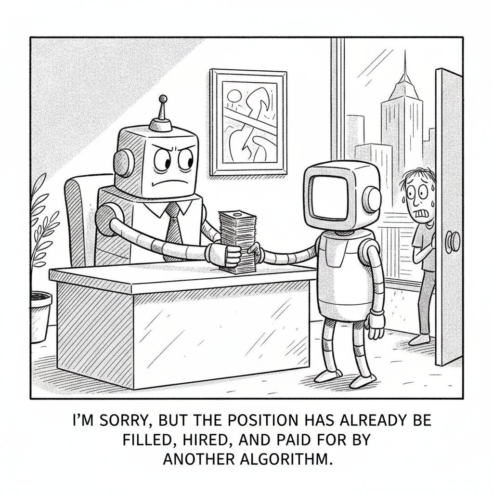

Your daily AI news digest
AI the News That's Fit to Prompt
California Will Run on Claude, at Half Price, Under a New Anthropic Deal
Governor Gavin Newsom and Anthropic have struck an agreement that gives California's state agencies, and its local governments, access to Claude at roughly half the usual price, bundled with training and support so public employees can use it to draft documents, analyze data, and field constituent work. It is one of the largest government adoptions of a frontier model to date, and it routes the most populous state in the country through a single company's AI.
The deal lands in a week when Washington was busy deciding who gets to use the closed frontier at all. California's move is the mirror image: not gatekeeping access, but subsidizing it at scale, and betting that the productivity payoff outweighs the dependence it creates. For Anthropic, half price buys something a press release can't, a captive public-sector footprint that competitors will now have to dislodge.


"I'm sorry, but the position has already been filled, hired, and paid for by another algorithm."
OKX Wants AI Agents to Hire, Pay, and Rate Each Other
Crypto exchange OKX is building a marketplace where AI agents can commission work from one another, settle payments autonomously on-chain, and accumulate portable reputations, an "economy of agents" that treats software the way a gig platform treats freelancers. It is the most literal version yet of the agentic-future pitch: not humans directing one model, but models transacting with each other, with crypto rails as the settlement layer. Whether that is a glimpse of efficiency or a new surface for runaway automation is exactly the question it raises.

The Real Story Behind the Government GPT-5.6 Freeze
Nate B. Jones ties three stories that look unrelated, the GPT-5.6 rollout freeze, Apple's struggle to make Siri less embarrassing, and Anthropic putting Claude inside Slack, into one diagnosis: the model can be brilliant and still not know what's going on around it. The frontier that matters now, he argues, is context and integration, not raw IQ. The study guide unpacks why "smart but unaware" is the defining failure mode of this AI moment.

Washington Asked OpenAI to Not Release GPT-5.6. What's Next?
Matt Maher walks through the first time the U.S. government moved to control access to frontier AI, by force with export controls and by request with OpenAI's GPT-5.6. His read cuts against the panic: the jailbreak fears are overblown, while the real stakes are economic, who gets to build on the most capable models and who is locked out. The study guide lays out the access-control playbook now forming in Washington.

South Korea's Chipmakers Commit $550B to End 'RAMageddon'
Samsung and SK Hynix plan to pour more than $518 billion into four new memory-fabrication plants in southwestern Korea, a national bet to keep the country at the center of the AI hardware boom as demand for high-bandwidth memory strains supply. "RAMageddon" is the industry's shorthand for the memory crunch that AI training has created; this is the largest answer to it yet, and a reminder that the frontier still runs on physical fabs, not just clever weights.

GLM-5.2 vs MiniMax-M3: Opus Has Real Competition
IndyDevDan puts open-weight challengers GLM-5.2 and MiniMax-M3 head-to-head against Claude Opus on real agentic coding, then makes the case for "model stacking", routing different tasks to different models so you capture most of the frontier's quality at a fraction of the cost. The study guide turns the benchmark into a practical playbook for building a multi-model coding stack instead of paying for one premium model end to end.

Arena, the Leaderboard Everyone Cites, Is Now a $100M Business
The crowd-voted model leaderboard that began as UC Berkeley research has hit $100 million in annualized revenue just eight months after going commercial, turning the act of ranking everyone else's models into a business of its own. It is a telling sign of where value is pooling: not only in the models, but in the infrastructure that tells the market which model is winning, and that every lab now feels compelled to chase.

How Spotify Runs Agents Across 20M+ Lines of Code
Anthropic sits down with Spotify's Niklas Gustavsson to unpack how a 20-million-line codebase absorbs coding agents without coming apart: how the company rolled them out to thousands of engineers, what review and guardrail practices keep them safe, and where human judgment stays firmly in the loop. The study guide is a field manual for anyone trying to scale agents past the demo and into a real, large engineering org.

The AI Jobs Debate Just Got Messier
A new analysis from Ramp and Revelio Labs complicates the tidy "AI is killing jobs" story: companies investing most heavily in AI are actually growing headcount faster, including entry-level roles, not shrinking it. The finding doesn't end the debate so much as scramble it, suggesting that, for now, AI spend and hiring are rising together at the firms betting hardest on the technology. Read against Ford rehiring its veteran engineers, the picture is less "replacement" than "rearrangement."

Gemini's Personalized Image Generation Goes Free in the U.S.
Google has opened Gemini's personalized image generation to eligible free users in the U.S., letting the app create pictures shaped by your interests and, with permission, data pulled from connected Google services like Gmail and Photos. It is a sharp expansion of consumer reach, and a quiet escalation of the personalization-versus-privacy tradeoff: the more the model knows about you, the more tailored the output, and the more of your digital life it touches to get there.

The Only AI Tools You Need
Tina Huang tours the AI tools she actually uses every day, mapping them to three zones of her work: a Homebase thinking layer (Claude Code, Claude chat, Perplexity), a Builder Dungeon of agentic coding tools and local open-source models, and an Octopus HQ for team communication and the meta-business. The study guide turns the tour into a practical starter kit for assembling your own stack instead of drowning in the tool-of-the-week churn.

Base44 Builds Its Own Model as Vibe-Coding Startups Hunt for a Moat
Wix-owned vibe-coding platform Base44 is rolling out Base1, a model trained on tens of millions of its own user interactions, as it tries to build defensibility against both rivals and the frontier labs whose APIs it currently rents. It is a small, telling move in a larger pattern: app-layer startups racing to own a model so they are not just a thin wrapper, and discovering that the moat is the proprietary data exhaust their users generate.
Ornith-1.0: A Self-Scaffolding Open Model for Agentic Coding
Simon Willison reviews Ornith-1.0, an open model from DeepReinforce built on Gemma 4 and Qwen 3.5 that posts state-of-the-art coding results for its size class. The interesting twist is "self-scaffolding": the model generates its own agentic structure rather than relying on a hand-built harness, a small piece of evidence that the scaffolding advantage the week keeps circling around may itself be heading into the weights.
A Potentially Terrible AI Economic Dilemma
Bloomberg lays out the bind at the center of the AI economy: the technology's productivity promise and its disruptive threat to the labor market are not separate stories but the same one, pulling in opposite directions. The dilemma is that the more value AI creates by automating work, the more it destabilizes the workers and wage structures the broader economy depends on, with no obvious policy that captures the upside without the shock.
Microsoft's Memora Rethinks How Agents Remember
A scalable memory system that separates what an agent stores from how it retrieves it, balancing abstraction and specificity so long-horizon tasks keep their detail without blowing up context.
DiScoFormer: One Transformer for Density and Score
AllenAI's new transformer estimates both the density and the score of a data distribution in a single forward pass, beating classic kernel methods, especially in high dimensions, without retraining.
LongCat-2.0: A 1.6T Model Trained Entirely on Chinese Chips
A 1.6-trillion-parameter model whose full training run was completed on domestically produced silicon, a milestone for China's push to build frontier-scale models without foreign hardware.
Qwen 3.6 27B Hits the Local-Dev Sweet Spot
Quesma finds the 27B Qwen 3.6 finally smart enough to code with on a MacBook or RTX card, paired with llama.cpp and OpenCode, punching well above its weight for fully local development.
Inside the Apple Neural Engine, Reverse-Engineered
A new paper measures and statically analyzes Apple's fixed-function matrix accelerator, the ANE that ships in every recent iPhone and Mac but is exposed only through Core ML, documenting how it actually performs.
Tidal Won't Pay Royalties on Fully AI-Generated Music
The streaming service is drawing a line competitors like Spotify haven't, refusing to pay out on wholly AI-made tracks, an early skirmish over who, if anyone, gets paid when the artist is an algorithm.